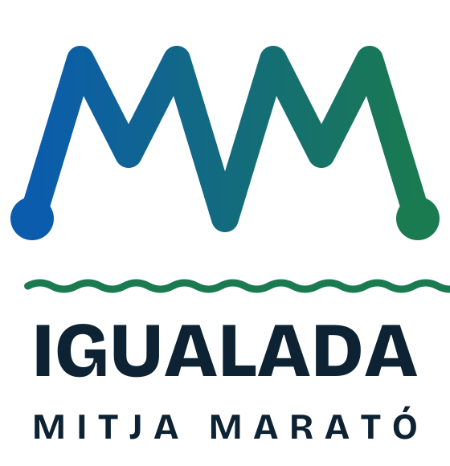
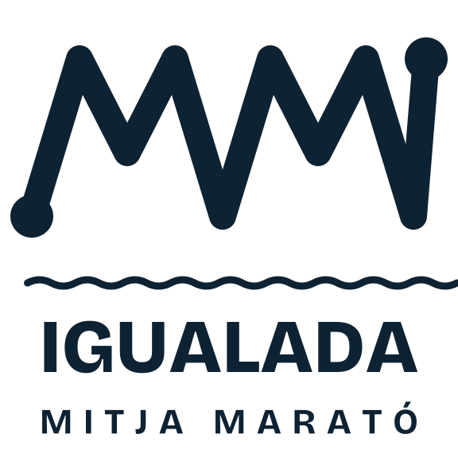
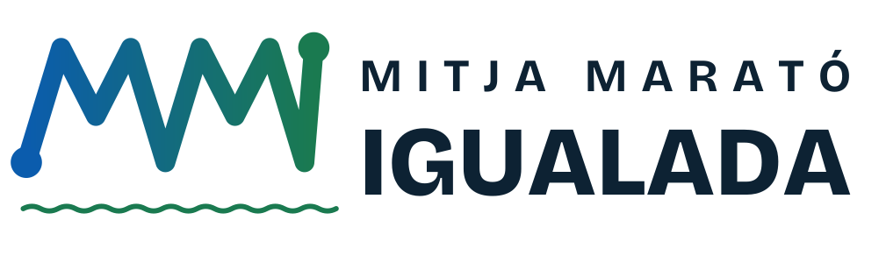
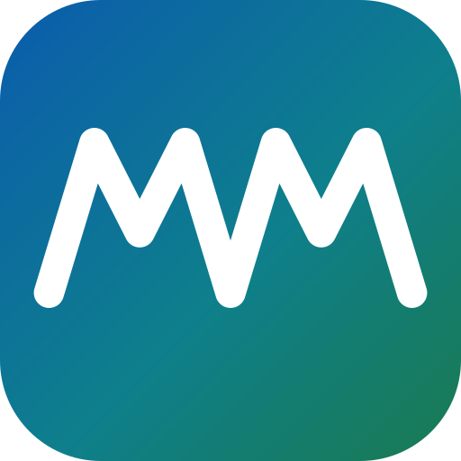
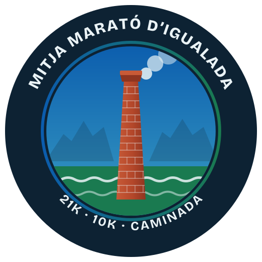
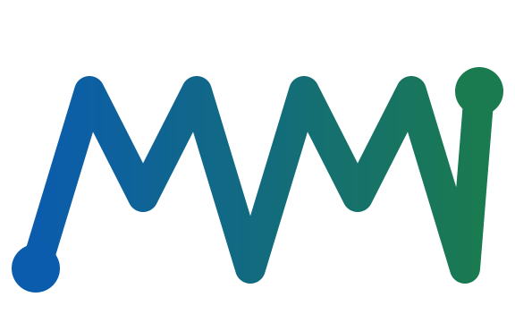

PROPOSTA DE LOGO · V1
MM Igualada
Una marca que es reconegui només veient-la: dues M dibuixades amb un sol traç, que són alhora la inicial de Mitja Marató, una serralada i el perfil d’altimetria d’una cursa. Comença amb un punt (sortida) i acaba amb un altre (meta), com al mapa d’un GPS. A sota, l’Anoia.
1 · Logotip principal

Color · sobre blanc

Blanc · sobre blau fosc (samarretes, cartells, llums)
Blanc · sobre el degradat de marca

Una tinta · per a serigrafia, segells, fax i impressió barata
2 · La família

Horitzontal · capçalera web, dorsals, correus, pancartes baixes

Icona · favicon, xarxes, app

Insígnia «Xemeneia de maó» · medalles, adhesius, arc de meta, samarreta finisher

Només la marca · brodats, patrons, fons
3 · Aplicacions
Samarreta tècnica blanca
Samarreta finisher blau fosc
Samarreta voluntariat
21K
042113 DE DESEMBRE · IGUALADAXIP
Dorsal
Banderoles d’avituallament i control
Arc de meta
4 · Proves de llegibilitat
Reduccions (160 · 100 · 64 px)
MM Igualada · Mitja Marató
Icona / favicon: 96 · 48 · 32 · 16 px i pestanya del navegador
5 · Per què funciona
- Es reconeix en un cop d’ull: una silueta molt simple (un traç en zig-zag) que es distingeix fins i tot a 16 px.
- Diu «Mitja Marató» (MM) i diu «cursa» (perfil d’altimetria, sortida → meta) sense necessitat de text.
- Diu Igualada: el nom en gran, l’Anoia a sota i, com a segell alternatiu, la xemeneia de maó de les antigues adoberies.
- Funciona en una tinta (samarreta, serigrafia, brodat) i en negatiu.
- Coherent amb la web: mateixa paleta blau-verd-gris del Parc Central i mateixa tipografia (Bricolage Grotesque).